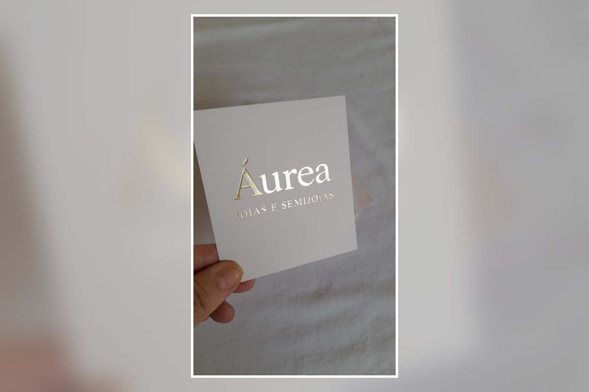

Para joias e semijoias
Ideal para marcas de brincos, colares, pulseiras, anéis, acessórios e presentes.
Valorize a apresentação das suas peças com um cartão personalizado para joias, semijoias e acessórios. Ele pode reunir agradecimento, cuidados, garantia, redes sociais, QR Code e outras informações importantes da sua marca.

O cartão pode complementar a embalagem e reforçar a identidade da sua marca no momento da entrega. A arte, o tamanho, o papel e o acabamento são definidos conforme o modelo e a necessidade do pedido.
Ideal para marcas de brincos, colares, pulseiras, anéis, acessórios e presentes.
Pode incluir cuidados, garantia, agradecimento, Instagram, WhatsApp, QR Code e instruções ao cliente.
Produção com sua logo, cores, estilo visual e informações para manter uma apresentação coerente com a sua marca.
Envie sua arte, referência ou ideia pelo WhatsApp. Confirmamos formato, quantidade, papel, acabamento, prazo e valor antes da produção.
Envie sua referência e solicite um orçamento personalizado.